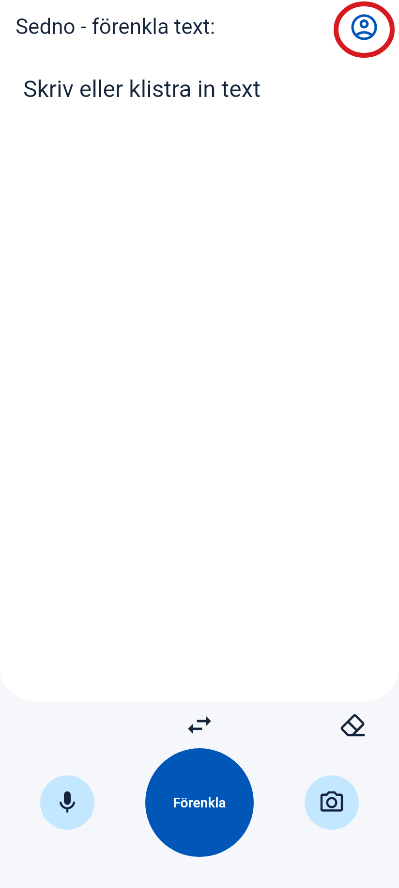
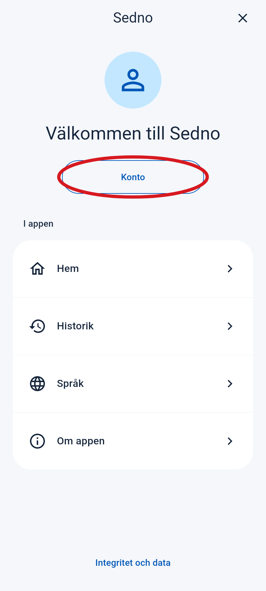
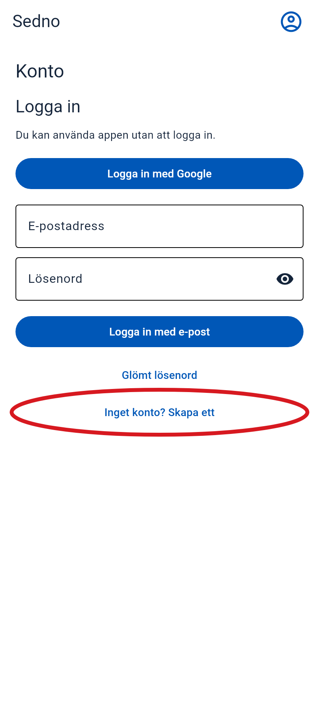
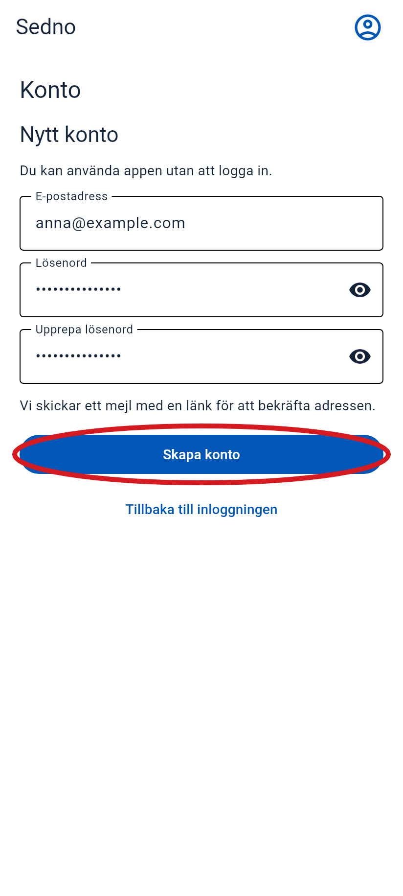
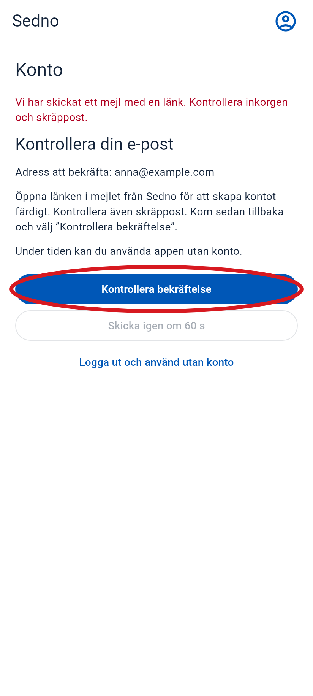
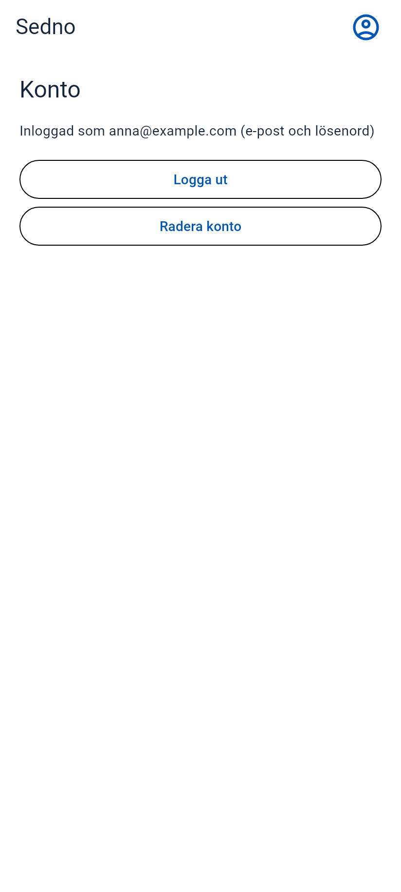

Så skapar du ett konto
Öppna Sedno på telefonen. Följ de här stegen i ordning.
Den röda cirkeln visar var du ska trycka. Skärmbilderna kommer från appen. Mejlet är ett exempel.
-
1 Öppna menyn
Tryck på personikonen uppe till höger.
Tryck här

-
2 Välj ”Konto”
Tryck på knappen i den röda cirkeln.
Tryck här

-
3 Välj att skapa ett konto
Tryck på ”Inget konto? Skapa ett”. Svep uppåt om du inte ser knappen.
Tryck här

-
4 Skriv e-post och lösenord
- Skriv din e-postadress.
- Välj ett lösenord med minst 6 tecken.
- Skriv samma lösenord en gång till i fältet under.
- Tryck på ”Skapa konto”.

-
5 Öppna din e-post
Leta efter mejlet från Sedno. Titta också i skräpposten. Öppna mejlet och tryck på länken för att bekräfta din e-postadress.
Tryck här
Exempel på mejl
Sedno
Bekräfta din e-postadress i Sedno.
Bekräfta e-post -
6 Gå tillbaka till Sedno
Öppna Sedno igen. Om du fortfarande ser den här skärmen, tryck på ”Kontrollera bekräftelse”.
Tryck här

-
7 Klart!
Du ser din e-postadress. Ditt konto är klart.
